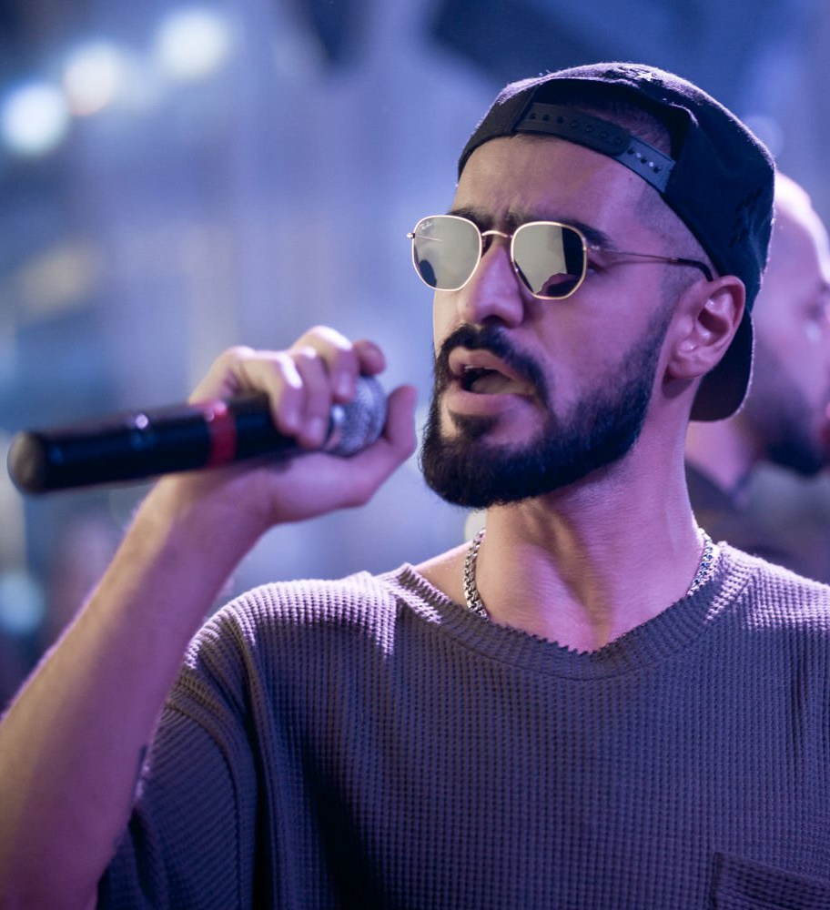
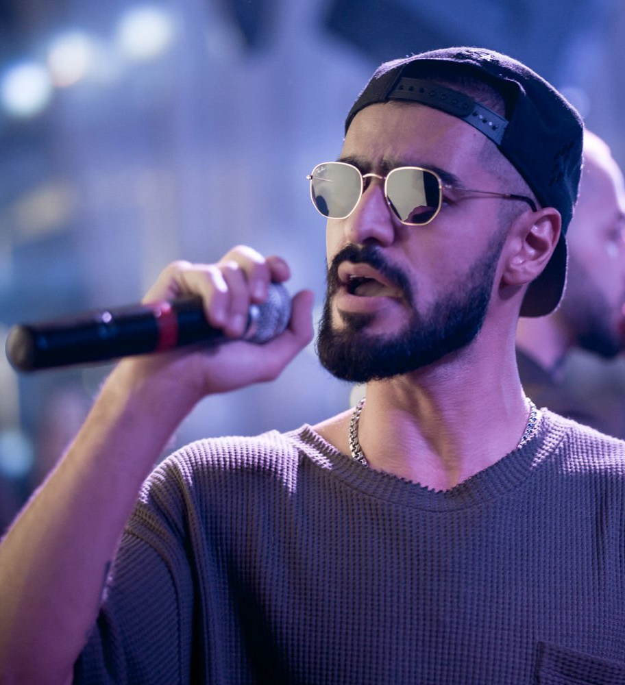

Miyagi & Andy Panda (также Эндшпиль) — российский хип-хоп дуэт из города Владикавказ, Северная Осетия, образованный в 2015 году. Коллектив состоит из двух человек, известных под сценическими псевдонимами: «Miyagi» — Азамат Кудзаев и «Andy Panda» (также «Эндшпиль») — Сослан Бурнацев. Родился Азамат 13 декабря 1990 года в городе Владикавказ, в семье медиков. Отец артиста — известный хирург Казбек Кудзаев, который возглавляет Центр ортопедии и эстетической хирургии Северной Осетии. Сослан Бурнацев — уроженец Владикавказа, по национальности — осетин. Дата рождения — 2 октября 1995 года. Получил профессию технолога, однако работать по специальности не стал.
Азамат Казбекович Кудзаев родился 13 декабря 1990 года во Владикавказе. Отец — хирург и руководитель «Центра ортопедии и эстетической хирургии» в Северной Осетии.
На третьем курсе Азамат начал заниматься рэпом. Работал хирургом, но в скором времени бросил и стал заниматься музыкой. Занимается рэпом с 2007 года. В 2007—2013 гг. выступал под псевдонимом Shau, затем сменил его на MiyaGi. Свой псевдоним взял в честь мистера Мияги из фильма «Парень-каратист»[1][2]. В 2009 году Азамат вступил в творческое объединение Dope Records, куда также, помимо Эндшпиля, входили Намо Миниган, Shuga, Асаб, SH Kera, группа The GuyS. В августе 2014 года Азамат основал собственный лейбл Asata, куда, помимо него, вошли Намо Миниган и Amigo. За время пребывания в Asata Азамат выпустил, ставшие успешными на тот момент, клипы на треки «Колибри», «Дом», «Бонни».
18 мая 2018 года, после долгого перерыва был выпущен сингл «Сонная Лощина». За 2018 год было выпущено ещё 3 сингла: «Captain», «Sorry», «Родная пой» (при уч. KADI).


По итогам голосования на электронном ресурсе GL5.ru дуэт осетинских исполнителей Miyagi & Эндшпиль оказался лидером 2015 года. В последовавшие годы музыканты не сдали позиций и продвинулись вверх. Сердца молодежи рэперы завоевали качественным продуктом: их песни несравнимы с другими композициями российских коллег по направлению, потому что ярко индивидуальны. Концерты Miyagi & Эндшпиль (Andy Panda) проходят с аншлагами, а гастрольная деятельность охватывает Россию и страны ближнего зарубежья. В миру имя рэпера Miyagi – Азамат Кудзаев. Родился будущий исполнитель в декабре 1990 года в центральной части Северного Кавказа. Детство и юность Кудзаева прошло во Владикавказе. В семье Азамата царила творческая атмосфера, хотя прямого отношения к искусству родители не имели. Отец с матерью, осетины по национальности, – медики. Казбек Кудзаев – уважаемый на родине хирург, в Северной Осетии он руководит центром ортопедии и эстетической хирургии. Двоим сыновьям (у Азамата есть родной брат) родители дали традиционное воспитание.
 

Andy Panda, также известный как Эндшпиль, — популярный российский рэпер, о творческой биографии которого смело можно сказать: музыкант добился всего собственными талантом и трудом. Исполнитель стал настоящим открытием для Северной Осетии, а затем и для всей страны. Сослан Бурнацев — таково настоящее имя Эндшпиля — родился во Владикавказе 2 октября 1995 года. По национальности молодой человек осетин. Окончив школу, музыкант отправился учиться на технолога. Однако, к счастью для поклонников, работать по этой специальности не стал, выбрав кардинально другой путь в жизни — путь на сцену.